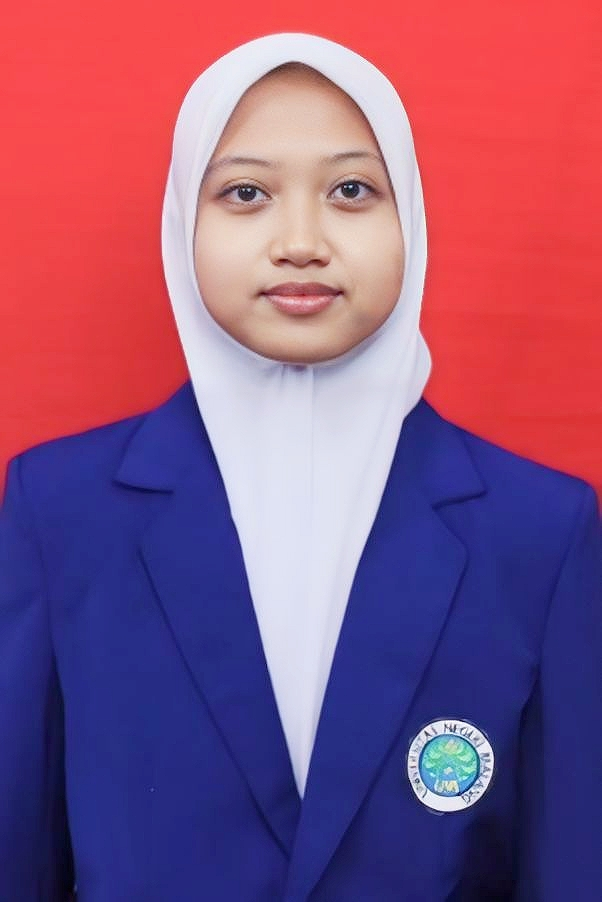

Jelajahi dunia kimia melalui simulasi interaktif, analisis grafik real-time, dan eksperimen virtual berbasis inkuiri terbimbing.
🎯14 Modul Interaktif
⚗Simulasi Real-Time
📊Grafik Dinamis
🧬Visualisasi Mikro
🏆Badge Penghargaan
Step 01 · Orientasi
Misi Investigasi
Selamat datang, Peneliti! Kamu berperan sebagai ilmuwan kimia yang akan menyelidiki faktor-faktor yang mempengaruhi laju reaksi.
🧪
Misi: Investigasi Laju Reaksi
Sebagai peneliti muda, tugasmu adalah mengidentifikasi bagaimana suhu, konsentrasi, dan luas permukaan mempengaruhi kecepatan reaksi kimia. Gunakan simulasi, grafik, dan analisis data untuk menarik kesimpulan ilmiah.
📋 Tujuan Pembelajaran
Mengidentifikasi faktor-faktor yang mempengaruhi laju reaksi
Merancang dan melakukan eksperimen virtual dengan variabel yang tepat
Menginterpretasi grafik orde reaksi dan menghitung konstanta laju (k)
Menghubungkan teori tumbukan dengan fenomena laju reaksi
Menyusun kesimpulan berdasarkan data eksperimen
Centang semua poin untuk melanjutkan ✓
Step 02 · Diagnostik Awal
Pretest Diagnostik
Sebelum memulai investigasi, jawab beberapa pertanyaan berikut untuk mengetahui pemahamanmu. Tidak ada jawaban benar/salah yang dinilai di sini.
Refleksi: Terima kasih telah menjawab! Jawaban akan dianalisis untuk memandu pembelajaran kamu. Mari mulai investigasi! 🚀
Step 03 · Orientasi Masalah
Fenomena Kontekstual
Amati dua fenomena reaksi kimia berikut dan buat prediksimu!
● MEMUTAR
▶
Reaksi Tablet Effervescent pada Suhu Berbeda
Klik untuk memutar simulasi visual
🔍 Pertanyaan Pemantik
1. Apa yang kamu amati dari kedua kondisi reaksi tersebut?
2. Faktor apa yang kamu duga menyebabkan perbedaan kecepatan reaksi?
3. Apa pertanyaan yang muncul di benakmu setelah melihat fenomena ini?
Step 04 · Identifikasi Masalah
Identifikasi Variabel
Seret (drag & drop) variabel berikut ke kolom yang tepat dalam tabel eksperimen!
Bank Variabel — Seret ke tabel di bawah
Suhu larutan
Konsentrasi HCl
Laju reaksi
Volume larutan
Luas permukaan
Waktu reaksi
Jenis reaktan
Katalis
⚡ Variabel Bebas
📏 Variabel Terikat
🔒 Variabel Kontrol
Step 05 · Perumusan Hipotesis
Rumuskan Hipotesis💡
Pilih faktor yang ingin kamu selidiki, lalu susun hipotesismu menggunakan template "Jika…, maka…"
Pilih Faktor
Jika
Maka
Karena
Step 06 · Pengumpulan Data
Simulasi Eksperimen
Geser slider untuk mengubah variabel dan amati perubahan laju reaksi secara real-time!
🌡️ Suhu 25°C
🧪 Konsentrasi 1.0 M
📐 Luas Permukaan Besar
⚗️ Katalis
Larutan Reaksi
A + B → C
Laju Reaksi (v)0.025 M/s
📋 Tabel Data Pengamatan
Suhu
Konsentrasi
Luas
Laju Reaksi
Step 07 · Analisis Data
Analisis Grafik
Pilih jenis grafik yang menghasilkan garis linear untuk menentukan orde reaksi!
🔢 Perhitungan
Orde reaksi terhadap A:—
Persamaan garis regresi:—
Konstanta laju (k):—
Koefisien korelasi (R²):—
💡 Grafik yang menghasilkan garis lurus (R² mendekati 1) menunjukkan orde reaksi yang benar.
Step 08 · Analisis Lanjutan
Visualisasi Mikroskopik
Amati gerak partikel pada skala molekul. Ubah suhu dan aktifkan energi aktivasi!
25°C
Suhu Sistem
Tumbukan efektif: 0
per detik
📖 Teori Tumbukan
Reaksi kimia terjadi ketika partikel-partikel bertumbukan dengan energi yang cukup (≥ Ea) dan orientasi yang tepat. Semakin tinggi suhu, semakin besar energi kinetik partikel → frekuensi tumbukan efektif meningkat → laju reaksi bertambah cepat.
Step 09 · Sintesis
Integrasi Tiga Representasi
Geser slider untuk melihat perubahan pada ketiga level representasi secara bersamaan!
Konsentrasi Reaktan 1.0 M
🔬 Makroskopik
Larutan biru tua reaksi lambat
⚛️ Mikroskopik
Partikel jarang tumbukan langka
📐 Simbolik
v = k[A]1
v = k × 1.0
v = 0.025 M/s
Step 10 · Penarikan Kesimpulan
Susun Kesimpulan
Berdasarkan data dan eksperimenmu, susun kesimpulan ilmiah berikut!
1. Faktor apa yang mempengaruhi laju reaksi?
2. Bagaimana pengaruh suhu terhadap laju reaksi?
3. Bagaimana hubungan konsentrasi dengan laju reaksi?
4. Jelaskan hubungan teori tumbukan dengan hasil eksperimen!
Step 11 · Refleksi Metakognitif
Refleksi Diri
Luangkan waktu untuk merefleksikan proses berpikirmu selama investigasi ini.
Apakah hipotesismu terbukti dari hasil eksperimen? Jelaskan!
Bagaimana hubungan antara visualisasi mikro (partikel) dengan grafik laju reaksi?
Apa hal baru yang kamu pelajari dari investigasi ini?
Kesulitan apa yang kamu hadapi dan bagaimana kamu mengatasinya?
Step 12 · Evaluasi
Posttest
Sekarang jawab soal-soal berikut untuk mengukur pemahamanmu setelah investigasi!
🎉
85
Skor Posttest kamu
N-gain Score (Peningkatan Belajar)
Pretest: 0Posttest: 0N-gain: 0
Step 13 · Evaluasi Akhir
Dashboard Hasil Belajar
Ringkasan perjalanan investigasimu. Kamu luar biasa! 🌟
—
Skor Pretest
—
Skor Posttest
—
N-gain
14
Modul Selesai
Progress Molekul
🏆
Chemical Investigator
Telah menyelesaikan Investigasi Digital Laju Reaksi dengan sukses!
Nahrurroini Asniatur Rohmah · 2203331604454
Media Pembelajaran Kimia · Laju Reaksi

Nama
Nahrurroini Asniatur Rohmah
NIM
2203331604454
Offering
A
Instansi
Universitas Negeri Malang
Program Studi
Pendidikan Kimia
Mata Kuliah
Media dan Asesmen dalam Pembelajaran Kimia
Web Based Learning · Inkuiri Terbimbing
Storyboard Materi Laju Reaksi — Digital Laboratory Theme